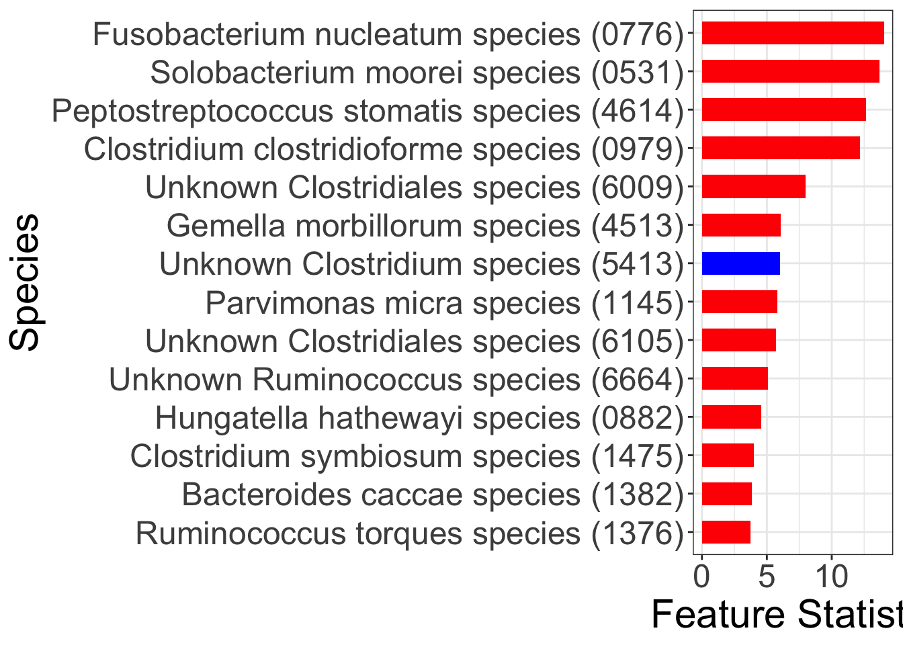

Colorectal Cancer (CRC) Study
Soham Ghosh
2024-06-18
Last updated: 2024-06-18
Checks: 6 1
Knit directory: zinck-website/
This reproducible R Markdown analysis was created with workflowr (version 1.7.1). The Checks tab describes the reproducibility checks that were applied when the results were created. The Past versions tab lists the development history.
The R Markdown is untracked by Git. To know which version of the R
Markdown file created these results, you’ll want to first commit it to
the Git repo. If you’re still working on the analysis, you can ignore
this warning. When you’re finished, you can run
wflow_publish to commit the R Markdown file and build the
HTML.
Great job! The global environment was empty. Objects defined in the global environment can affect the analysis in your R Markdown file in unknown ways. For reproduciblity it’s best to always run the code in an empty environment.
The command set.seed(20240617) was run prior to running
the code in the R Markdown file. Setting a seed ensures that any results
that rely on randomness, e.g. subsampling or permutations, are
reproducible.
Great job! Recording the operating system, R version, and package versions is critical for reproducibility.
Nice! There were no cached chunks for this analysis, so you can be confident that you successfully produced the results during this run.
Great job! Using relative paths to the files within your workflowr project makes it easier to run your code on other machines.
Great! You are using Git for version control. Tracking code development and connecting the code version to the results is critical for reproducibility.
The results in this page were generated with repository version 6e66a4e. See the Past versions tab to see a history of the changes made to the R Markdown and HTML files.
Note that you need to be careful to ensure that all relevant files for
the analysis have been committed to Git prior to generating the results
(you can use wflow_publish or
wflow_git_commit). workflowr only checks the R Markdown
file, but you know if there are other scripts or data files that it
depends on. Below is the status of the Git repository when the results
were generated:
Untracked files:
Untracked: analysis/CRC.Rmd
Untracked: analysis/Heatmaps.Rmd
Untracked: analysis/IBD.Rmd
Untracked: analysis/simulation.Rmd
Unstaged changes:
Modified: analysis/index.Rmd
Note that any generated files, e.g. HTML, png, CSS, etc., are not included in this status report because it is ok for generated content to have uncommitted changes.
There are no past versions. Publish this analysis with
wflow_publish() to start tracking its development.
CRC Data Analysis
We applied Zinck to meta-analyze five metagenomics studies of CRC.
The five studies correspond to five different countries for the CRC
data, which are named AT" (Australia),US” (USA),
CN" (China),DE” (Germany), and ``FR” (France). The sample
sizes are 109, 127, 120, 114, and 104, respectively, and the number of
cases and controls is roughly balanced in each study. We focus on the
most abundant \(300\) species.
##################### CRC data species level ##########################
#######################################################################
library(randomForest)randomForest 4.7-1.1Type rfNews() to see new features/changes/bug fixes.library(zinck)
library(reshape2)
library(knockoff)
library(ggplot2)
Attaching package: 'ggplot2'The following object is masked from 'package:randomForest':
marginlibrary(rstan)Loading required package: StanHeadersrstan (Version 2.21.8, GitRev: 2e1f913d3ca3)For execution on a local, multicore CPU with excess RAM we recommend calling
options(mc.cores = parallel::detectCores()).
To avoid recompilation of unchanged Stan programs, we recommend calling
rstan_options(auto_write = TRUE)load("/Users/Patron/Documents/zinLDA research/count.Rdata")
load("/Users/Patron/Documents/zinLDA research/meta.RData")
dcount <- count[,order(decreasing=T,colSums(count,na.rm=T),
apply(count,2L,paste,collapse=''))][,1:300]
## ordering the columns w/ decreasing abundance
X <- dcount
Y <- as.factor(meta$Group)
lookup <- c("CTR" = 0, "CRC" = 1)
Y <- lookup[Y] ## Converting into 0/1 dataWe train the zinck model on \(X\) using ADVI with an optimal number of clusters (19). We generate the knockoff matrix \(\tilde{X}\) by plugging in the learnt parameters into the generative model.
dlt <- rep(0,ncol(X)) ## Initializing deltas with the individual column sparsities
for(t in (1:ncol(X)))
{
dlt[t] <- 1-mean(X[,t]>0)
if(dlt[t]==0)
{
dlt[t] = dlt[t]+0.01
}
if (dlt[t]==1)
{
dlt[t] = dlt[t]-0.01
}
}
zinLDA_stan_data <- list(
K = 19,
V = ncol(X),
D = nrow(X),
n = X,
delta = dlt
)
zinck_code <- "data {
int<lower=1> K; // num topics
int<lower=1> V; // num words
int<lower=0> D; // num docs
int<lower=0> n[D, V]; // word counts for each doc
// hyperparameters
vector<lower=0, upper=1>[V] delta;
}
parameters {
simplex[K] theta[D]; // topic mixtures
vector<lower=0, upper=1>[V] zeta[K]; // zero-inflated betas
vector<lower=0>[V] gamma1[K];
vector<lower=0>[V] gamma2[K];
vector<lower=0>[K] alpha;
}
transformed parameters {
vector[V] beta[K];
// Efficiently compute beta using vectorized operations
for (k in 1:K) {
vector[V] cum_log1m;
cum_log1m[1:(V - 1)] = cumulative_sum(log1m(zeta[k, 1:(V - 1)]));
cum_log1m[V] = 0;
beta[k] = zeta[k] .* exp(cum_log1m);
beta[k] = beta[k] / sum(beta[k]);
}
}
model {
for (k in 1:K) {
alpha[k] ~ gamma(100,100); // Change these hyperparameters as needed
}
for (d in 1:D) {
theta[d] ~ dirichlet(alpha);
}
for (k in 1:K) {
for (m in 1:V) {
gamma1[k,m] ~ gamma(1,1);
gamma2[k,m] ~ gamma(1,1);
}
}
// Zero-inflated beta likelihood and data likelihood
for (k in 1:K) {
for (m in 1:V) {
real lp_non_zero = bernoulli_lpmf(0 | delta[m]) + beta_lpdf(zeta[k, m] | gamma1[k, m], gamma2[k, m]);
real lp_zero = bernoulli_lpmf(1 | delta[m]);
target += log_sum_exp(lp_non_zero, lp_zero);
}
}
// Compute the eta values and data likelihood more efficiently
for (d in 1:D) {
vector[V] eta = theta[d, 1] * beta[1];
for (k in 2:K) {
eta += theta[d, k] * beta[k];
}
eta = eta / sum(eta);
n[d] ~ multinomial(eta);
}
}
"
stan.model = stan_model(model_code = zinck_code)Trying to compile a simple C fileRunning /Library/Frameworks/R.framework/Resources/bin/R CMD SHLIB foo.c
clang -mmacosx-version-min=10.13 -I"/Library/Frameworks/R.framework/Resources/include" -DNDEBUG -I"/Library/Frameworks/R.framework/Versions/4.1/Resources/library/Rcpp/include/" -I"/Library/Frameworks/R.framework/Versions/4.1/Resources/library/RcppEigen/include/" -I"/Library/Frameworks/R.framework/Versions/4.1/Resources/library/RcppEigen/include/unsupported" -I"/Library/Frameworks/R.framework/Versions/4.1/Resources/library/BH/include" -I"/Library/Frameworks/R.framework/Versions/4.1/Resources/library/StanHeaders/include/src/" -I"/Library/Frameworks/R.framework/Versions/4.1/Resources/library/StanHeaders/include/" -I"/Library/Frameworks/R.framework/Versions/4.1/Resources/library/RcppParallel/include/" -I"/Library/Frameworks/R.framework/Versions/4.1/Resources/library/rstan/include" -DEIGEN_NO_DEBUG -DBOOST_DISABLE_ASSERTS -DBOOST_PENDING_INTEGER_LOG2_HPP -DSTAN_THREADS -DBOOST_NO_AUTO_PTR -include '/Library/Frameworks/R.framework/Versions/4.1/Resources/library/StanHeaders/include/stan/math/prim/mat/fun/Eigen.hpp' -D_REENTRANT -DRCPP_PARALLEL_USE_TBB=1 -I/usr/local/include -fPIC -Wall -g -O2 -c foo.c -o foo.o
In file included from <built-in>:1:
In file included from /Library/Frameworks/R.framework/Versions/4.1/Resources/library/StanHeaders/include/stan/math/prim/mat/fun/Eigen.hpp:13:
In file included from /Library/Frameworks/R.framework/Versions/4.1/Resources/library/RcppEigen/include/Eigen/Dense:1:
In file included from /Library/Frameworks/R.framework/Versions/4.1/Resources/library/RcppEigen/include/Eigen/Core:88:
/Library/Frameworks/R.framework/Versions/4.1/Resources/library/RcppEigen/include/Eigen/src/Core/util/Macros.h:628:1: error: unknown type name 'namespace'
namespace Eigen {
^
/Library/Frameworks/R.framework/Versions/4.1/Resources/library/RcppEigen/include/Eigen/src/Core/util/Macros.h:628:16: error: expected ';' after top level declarator
namespace Eigen {
^
;
In file included from <built-in>:1:
In file included from /Library/Frameworks/R.framework/Versions/4.1/Resources/library/StanHeaders/include/stan/math/prim/mat/fun/Eigen.hpp:13:
In file included from /Library/Frameworks/R.framework/Versions/4.1/Resources/library/RcppEigen/include/Eigen/Dense:1:
/Library/Frameworks/R.framework/Versions/4.1/Resources/library/RcppEigen/include/Eigen/Core:96:10: fatal error: 'complex' file not found
#include <complex>
^~~~~~~~~
3 errors generated.
make: *** [foo.o] Error 1set.seed(1)
fitCRC <- vb(stan.model, data=zinLDA_stan_data, algorithm="meanfield", iter=10000) ## Fitting the zinck modelChain 1: ------------------------------------------------------------
Chain 1: EXPERIMENTAL ALGORITHM:
Chain 1: This procedure has not been thoroughly tested and may be unstable
Chain 1: or buggy. The interface is subject to change.
Chain 1: ------------------------------------------------------------
Chain 1:
Chain 1:
Chain 1:
Chain 1: Gradient evaluation took 0.161396 seconds
Chain 1: 1000 transitions using 10 leapfrog steps per transition would take 1613.96 seconds.
Chain 1: Adjust your expectations accordingly!
Chain 1:
Chain 1:
Chain 1: Begin eta adaptation.
Chain 1: Iteration: 1 / 250 [ 0%] (Adaptation)
Chain 1: Iteration: 50 / 250 [ 20%] (Adaptation)
Chain 1: Iteration: 100 / 250 [ 40%] (Adaptation)
Chain 1: Iteration: 150 / 250 [ 60%] (Adaptation)
Chain 1: Iteration: 200 / 250 [ 80%] (Adaptation)
Chain 1: Iteration: 250 / 250 [100%] (Adaptation)
Chain 1: Success! Found best value [eta = 0.1].
Chain 1:
Chain 1: Begin stochastic gradient ascent.
Chain 1: iter ELBO delta_ELBO_mean delta_ELBO_med notes
Chain 1: 100 -101579506.860 1.000 1.000
Chain 1: 200 -52846177.365 0.961 1.000
Chain 1: 300 -32118619.090 0.856 0.922
Chain 1: 400 -21680285.671 0.762 0.922
Chain 1: 500 -16659126.019 0.670 0.645
Chain 1: 600 -13791601.465 0.593 0.645
Chain 1: 700 -12383978.756 0.525 0.481
Chain 1: 800 -11531586.036 0.468 0.481
Chain 1: 900 -11017293.852 0.421 0.301
Chain 1: 1000 -10701454.874 0.382 0.301
Chain 1: 1100 -10467099.061 0.284 0.208
Chain 1: 1200 -10292159.235 0.194 0.114
Chain 1: 1300 -10140606.084 0.131 0.074
Chain 1: 1400 -10006940.702 0.084 0.047
Chain 1: 1500 -9896889.164 0.055 0.030
Chain 1: 1600 -9803820.064 0.035 0.022
Chain 1: 1700 -9717709.539 0.025 0.017
Chain 1: 1800 -9641004.500 0.018 0.015
Chain 1: 1900 -9571053.625 0.014 0.013
Chain 1: 2000 -9506415.167 0.012 0.011
Chain 1: 2100 -9452044.297 0.010 0.009 MEDIAN ELBO CONVERGED
Chain 1:
Chain 1: Drawing a sample of size 1000 from the approximate posterior...
Chain 1: COMPLETED.Warning: Pareto k diagnostic value is Inf. Resampling is disabled. Decreasing
tol_rel_obj may help if variational algorithm has terminated prematurely.
Otherwise consider using sampling instead.theta <- fitCRC@sim[["est"]][["theta"]]
beta <- fitCRC@sim[["est"]][["beta"]]
X_tilde_CRC <- zinck::generateKnockoff(X,theta,beta,seed=1) ## Generating the knockoff copyWe move on to fit a tuned Random Forest model relating the augmented set of covariates with the outcome of interest \(Y\).
X_aug <- cbind(X,X_tilde_CRC) ## Creating the augmented matrix
######### Tuning the Random Forest model ####################
bestmtry <- tuneRF(X_aug,as.factor(Y),stepFactor = 1.5,improve=1e-5,ntree=1000) ## Getting the best mtry hyperparametermtry = 24 OOB error = 26.31%
Searching left ...
mtry = 16 OOB error = 28.92%
-0.09933775 1e-05
Searching right ...
mtry = 36 OOB error = 24.56%
0.06622517 1e-05
mtry = 54 OOB error = 24.56%
0 1e-05 
m <- bestmtry[as.numeric(which.min(bestmtry[,"OOBError"])),1]
df_X <- as.data.frame(X_aug)
colnames(df_X) <- NULL
rownames(df_X) <- NULL
df_X$Y <- Y
model_rf <- randomForest(formula=as.factor(Y)~.,ntree=1000,mtry=m,
importance=TRUE,data=as.matrix(df_X)) ## Fitting the tuned Random Forest model
cf <- as.data.frame(importance(model_rf))[,3] ## Extracting the Mean Decrease in Impurities for each variable
W <- abs(cf[1:300])-abs(cf[301:600])
T <- knockoff.threshold(W,fdr = 0.1, offset = 0) ## This is the knockoff threshold
print(which(W>=T)) [1] 8 33 47 54 81 124 130 136 146 193 215 245 255 263 264 268 283names_zinck <- colnames(X[,which(W>=T)])Finally, we can visualize the importance of these selected species using the Feature Statistics obtained by contrasting the Random Forest importance scores of the original and the knockoff features.
data.species <- data.frame(impscores=sort(W[which(W>=T)],decreasing = FALSE),
name=factor(names_zinck, levels=names_zinck), y=seq(length(names_zinck))*0.9)
plot.species <- ggplot(data.species)+geom_col(aes(impscores,name),
fill="black",width=0.6)+theme_bw()+
ylab("Species")+xlab("Feature Statistic")
plot.species
sessionInfo()R version 4.1.3 (2022-03-10)
Platform: x86_64-apple-darwin17.0 (64-bit)
Running under: macOS Big Sur/Monterey 10.16
Matrix products: default
BLAS: /Library/Frameworks/R.framework/Versions/4.1/Resources/lib/libRblas.0.dylib
LAPACK: /Library/Frameworks/R.framework/Versions/4.1/Resources/lib/libRlapack.dylib
locale:
[1] en_US.UTF-8/en_US.UTF-8/en_US.UTF-8/C/en_US.UTF-8/en_US.UTF-8
attached base packages:
[1] stats graphics grDevices utils datasets methods base
other attached packages:
[1] rstan_2.21.8 StanHeaders_2.21.0-7 ggplot2_3.4.2
[4] knockoff_0.3.6 reshape2_1.4.4 zinck_0.0.0.9000
[7] randomForest_4.7-1.1 workflowr_1.7.1
loaded via a namespace (and not attached):
[1] Rcpp_1.0.10 lattice_0.21-8 prettyunits_1.1.1 getPass_0.2-2
[5] ps_1.7.5 glmnet_4.1-7 rprojroot_2.0.3 digest_0.6.31
[9] foreach_1.5.2 utf8_1.2.3 R6_2.5.1 plyr_1.8.8
[13] stats4_4.1.3 evaluate_0.21 highr_0.10 httr_1.4.6
[17] pillar_1.9.0 rlang_1.1.1 rstudioapi_0.14 whisker_0.4.1
[21] callr_3.7.3 jquerylib_0.1.4 Matrix_1.5-1 rmarkdown_2.22
[25] labeling_0.4.2 splines_4.1.3 stringr_1.5.0 loo_2.6.0
[29] munsell_0.5.0 compiler_4.1.3 httpuv_1.6.11 xfun_0.39
[33] pkgconfig_2.0.3 pkgbuild_1.4.2 shape_1.4.6 htmltools_0.5.5
[37] tidyselect_1.2.0 gridExtra_2.3 tibble_3.2.1 matrixStats_0.63.0
[41] codetools_0.2-19 fansi_1.0.4 withr_2.5.0 crayon_1.5.2
[45] dplyr_1.1.2 later_1.3.1 grid_4.1.3 DBI_1.1.3
[49] jsonlite_1.8.5 gtable_0.3.3 lifecycle_1.0.3 git2r_0.32.0
[53] magrittr_2.0.3 scales_1.2.1 RcppParallel_5.1.7 cli_3.6.1
[57] stringi_1.7.12 cachem_1.0.8 farver_2.1.1 fs_1.6.2
[61] promises_1.2.0.1 bslib_0.5.0 generics_0.1.3 vctrs_0.6.5
[65] iterators_1.0.14 tools_4.1.3 glue_1.6.2 parallel_4.1.3
[69] processx_3.8.1 fastmap_1.1.1 survival_3.5-5 yaml_2.3.7
[73] inline_0.3.19 colorspace_2.1-0 knitr_1.43 sass_0.4.6